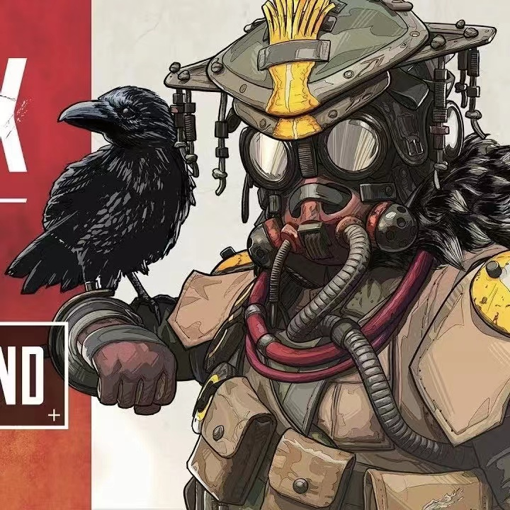

Blood hunter
Profession
https://zh.moegirl.org.cn/Apex
寻血猎犬的追踪能力能帮助队伍找到隐藏的对手并追踪敌人的动向。
寻血猎犬呼唤着地球中古老的北欧神明来指引大家，他相信命运已经决定并且将会带领大家走向死亡。
不过这个知识伴随着力量，因为在他死前，寻血猎犬知道自己无人能挡。
Skills
- 上帝之眼——“众神之父赐予我视野！” 战术技能，可以简单地显示前方所有建筑中隐藏的敌人、陷阱和线索。
- 追踪器——能看到敌人踪迹的被动技能
- 狂野猎人——终极技能，增强角色感知，增加移动速度，标记敌人
Work History
"幼犬" The Old Ways
成长与试炼
- 因机械运作造成的雪崩吞噬了寻血猎犬的父亲，之后寻血猎犬的族群只相信自己的“技艺”与“经验”。
- 叔叔教他狩猎，给了他代代相传的寻血“渡鸦之斧”
- 在试炼中，布洛特亨德尔用捡到的充能步枪击倒了巨大的猎兽
- 而他明白，依靠这种方式是不会被村民们认可的，于是他将充能步枪埋藏在了土里。
"祭奠" 不被承认的
无法被理解
- 祭奠时，村里没有人杀死猎兽，而幼犬却献上了猎兽的角，叔叔若有所思的闻了闻
- “你选择了扣动扳机的快捷杀戮；”叔叔沉稳但失望的说着：“你背叛了传统。”
- 寻血幼犬愤怒的将"渡鸦之斧"重重的砸向了祭奠台，往后离去。
"继承，全新方式" 猛兽重袭
激战
- 走进森林，那只猎兽突然他袭来——原来并没有死，他马上把藏起来的充能步枪对准了猎兽。
- ”滋——..."还未蓄力完，猎兽击飞了他。这时叔叔也赶了过来，独自一人与猎兽搏斗。
- 昏迷中，寻血幼犬隐隐看到叔叔勇猛战斗，但也被猎兽甩飞。
- 村民赶来支援，但落后的攻击手段无法抗衡这只庞然大物。
- 于是他将破烂的充能步枪核心拿了出来，用力丢向了猎兽。爆炸的伤害让它重创，逃回了洞里
- 幼犬见局势稳定了下来，便冲向了奄奄一息的叔叔。
"寻血猎犬" 猎杀猎兽
“ 你可以叫我'寻血猎犬' ”
- “也许昔日之道的意义，不仅仅在于我们选择什么武器。” “从未有人杀死过的猎兽...你，将成为第一个！”叔叔拿起了“渡鸦之斧”，对他说到：“你，寻血猎犬；众神之父，将会...指引你...”将手斧交给了他后，宛如父亲一般的叔叔，永远闭上了双眼...
- 在伤心中，他已然燃起了决心，他沿着巨兽的血迹，渡鸦和他一起，找到了猎兽。
- 他愤怒的将"渡鸦之斧"劈向了巨兽！他完成了叔叔的考核...
Education
Learning uncle, growing up in hunting, master
high technology